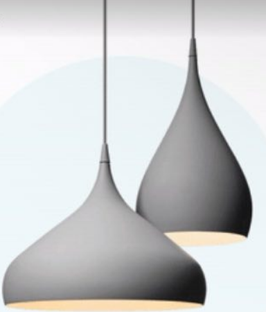

<!DOCTYPE html>
<html lang="en">
<head>
    <meta charset="UTF-8">
    <meta name="viewport" content="width=device-width, initial-scale=1.0">
    <title>Document</title>
    <link rel="stylesheet" href="style2.css">
</head>
</html>
 <body>
  <div class="container">
   <div class="left-section">
    <div class="title">Spinning Pendel - BH2 -<br> MAT GRÅ</div>
    <div class="price">$350</div>
    <div class="description">Materials-driven and process-led, designer Benjamin Hubert is interested in challenging conceptions about ordinary materials. His smooth and elegant spinning lights are inspired by the traditional process of metal spinning and intend to emphasize this technique.</div>
    <div class="color">COLOR: BLACK</div>
    <div class="add-to-cart">
     <button>ADD TO CART</button>
    </div>
   </div>
   <div class="right-section">
    
   </div>
  </div>
  <div class="footer">
   <div>Get in touch</div>
   <div class="social">
    <a href="#">Facebook</a>
    <a href="#">Twitter</a>
    <a href="#">Behance</a>
   </div>
  </div>
 </body>
</html>